Instagram lets you connect your business account to NexCognit so customers can reach you through Instagram direct messages. This guide walks through the setup flow from Meta for Developers to the final connection in NexCognit.
Important
Important: Before connecting Instagram, you must first complete the Facebook/Messenger integration. Instagram uses the Meta app and Facebook configuration created during the Facebook setup. If Facebook is not connected, the Instagram connection will not work.
Prerequisites
- You have access to Meta for Developers.
- You already have a Meta app for the Facebook Messenger setup flow.
- You have access to the Facebook Page and linked Instagram Business Account that will be used with NexCognit.
Step 1 — Open Meta for Developers
Open developers.facebook.com to continue the Instagram channel setup.
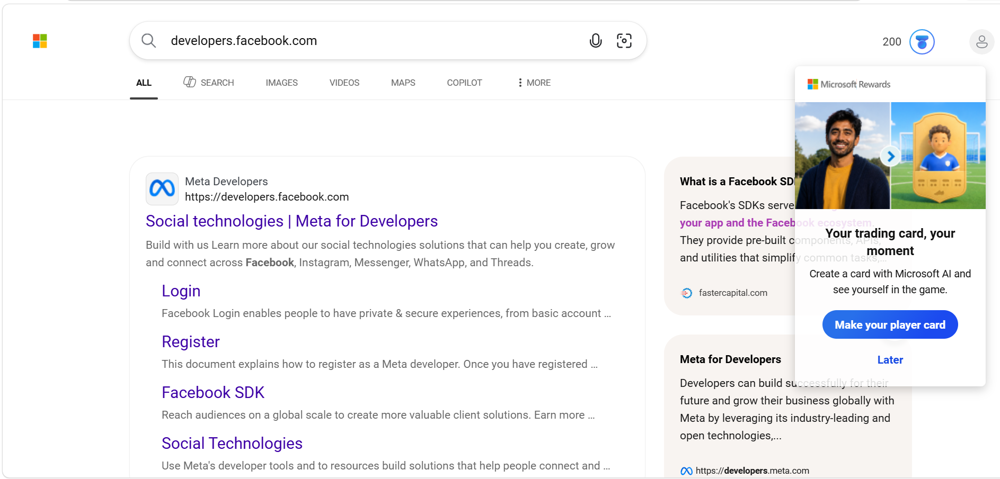
Step 2 — Open My Apps
Open the My Apps section from the top-right area of the Meta for Developers page.
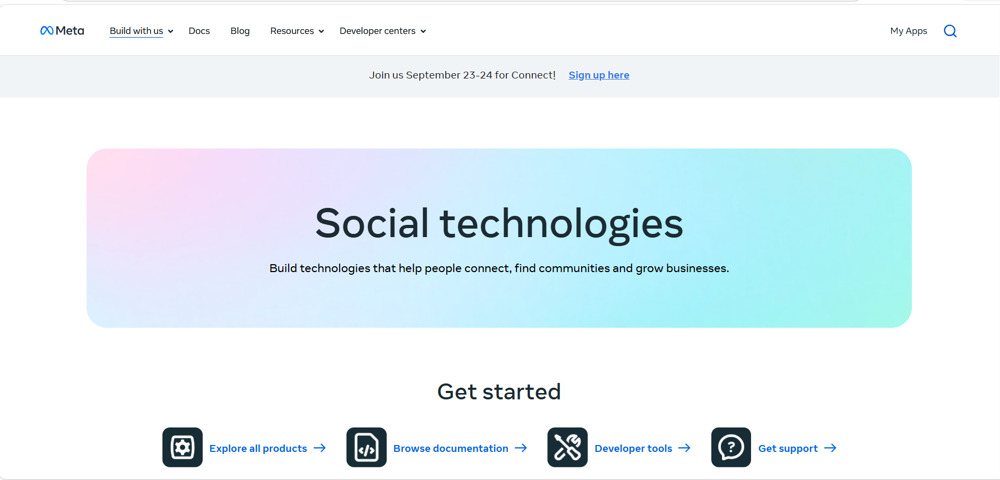
Step 3 — Select the existing Meta app
Select the Meta app that was already created for the Facebook Messenger connection, since the Instagram setup continues from the same app.
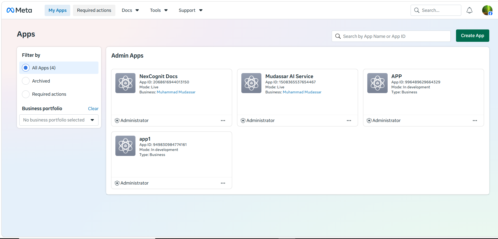
Step 4 — Open Use Cases from the sidebar
Open the Use Cases section inside the selected Meta app.
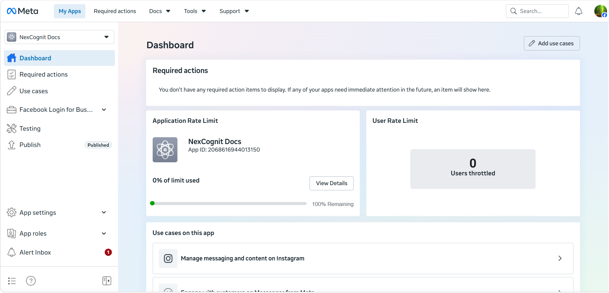
Step 5 — Customize Instagram
Open or customize the Instagram use case inside the Meta app.
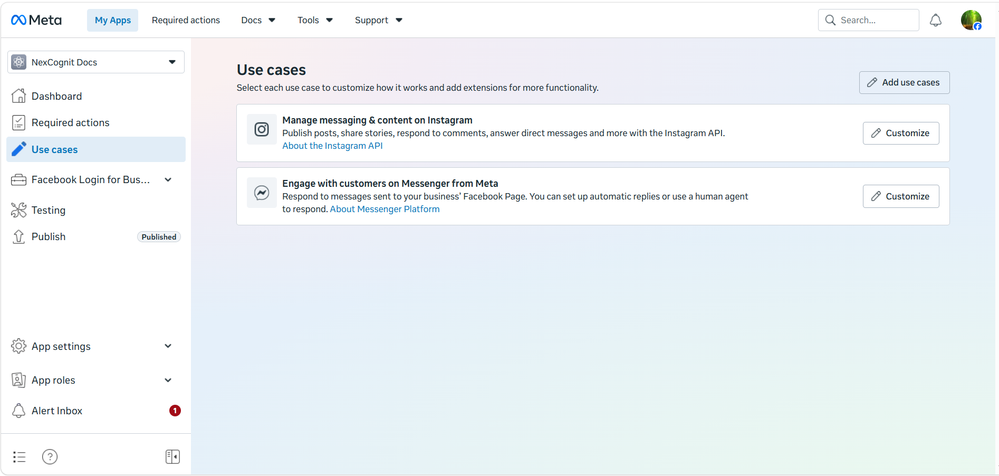
Step 6 — Add the required permission
Add the required permission from the permissions area. This is the permission needed to support the Instagram/Facebook channel connection shown in the setup flow.
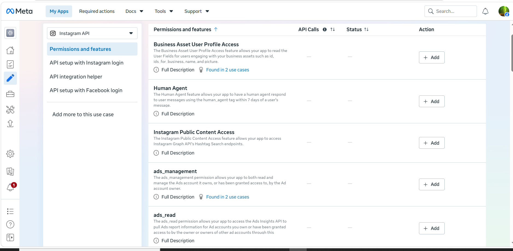
Step 7 — Add the Instagram webhook URL
Paste the Instagram webhook URL from NexCognit into the Instagram API settings and then save the configuration.
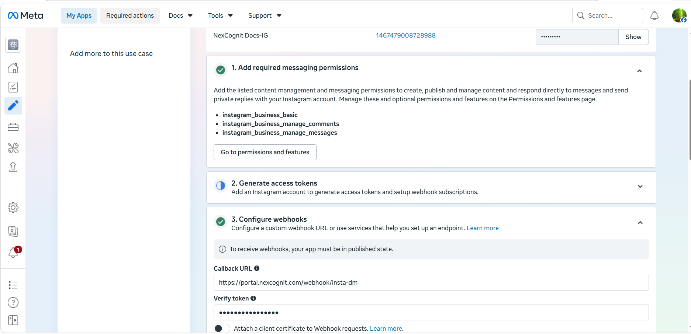
Step 8 — Open Facebook Page settings
Open the settings area of the connected Facebook Page.
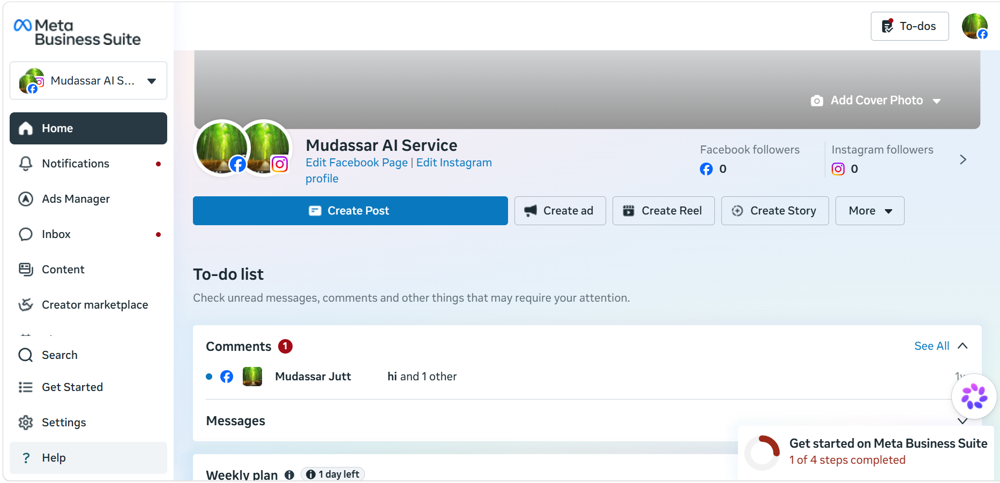
Step 9 — Copy the Instagram Business Account ID
The Instagram Business Account ID can be found from the page’s linked Instagram account settings, and this ID will be needed in NexCognit.
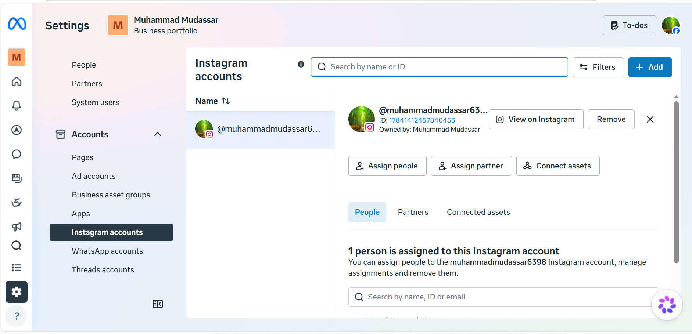
Step 10 — Open Instagram channel settings in NexCognit
Go to the NexCognit dashboard, open Channel Settings, and choose the Instagram channel configuration.
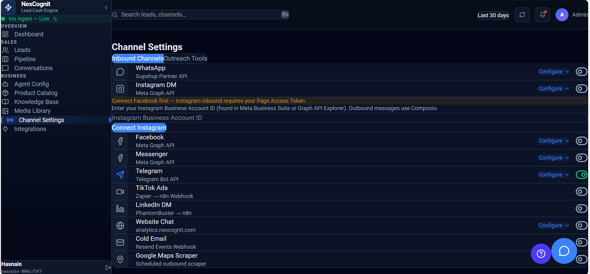
Step 11 — Paste the Business Account ID and connect
Paste the Instagram Business Account ID into NexCognit and complete the connection.
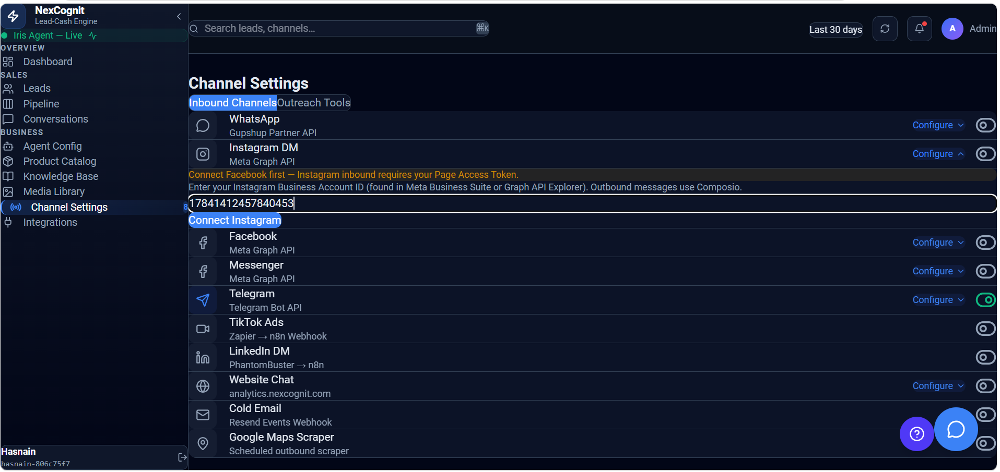
How Instagram works after setup
Once the Instagram channel is connected, customers can start conversations through Instagram direct messages and NexCognit can respond with the configured assistant behavior. Those conversations can then be reviewed in the NexCognit workspace.
Things to know
- Use the same Meta app that was created for the Facebook Messenger flow if that is how your setup is organized.
- Make sure the Instagram Business Account is linked to the correct Facebook Page.
- If the channel does not connect, confirm that the Business Account ID was pasted correctly and that the required permissions are granted.